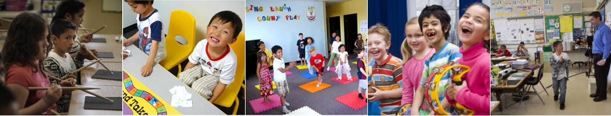

In the News
The Washington Post - 2016-04-27
| |
Hancock joined a group of educators and researchers Tuesday at the U.S. Education Department's headquarters to discuss how music can be better integrated into lessons on math, engineering and even computer science, ahead of International Jazz Day this weekend.
Click here to view the full article |
USA Today - 2016-04-26
| |
WASHINGTON - U.S. Education Secretary John King on Tuesday doubled down on his effort to support a well-rounded education for the USA's schoolchildren, unveiling a curriculum that embeds music into math and science lessons for millions of kids....
Click here to view the full article |
San Bruno Patch - 2015-11-16
| |
Congratulations to Allen Elementary School who was honored on November 5th in a celebration hosted by Innovate Public Schools in Silicon Valley for helping Allen's population of Latino students achieve better results on the 2014-2015 state test in math than the state's overall average for all students. |
Good at music USA - 2013-12-21
 |
Meet Endre Balogh, founder of the nonprofit Toones Academic Music program in Foster City, California, a program that helps children to become the problem solvers of tomorrow.
Click here to view the full article |
Caitlin Esch - 2012-04-07
|
Math teachers know that fractions can be hard for the average third-grader. Teachers at a public school in San Bruno, Calif., just south of San Francisco, are trying something new. They're teaching difficult math concepts through music, and they're getting remarkable results.
Click here to view the full article |
KQED San Francisco - 2012-04-06
Jill Tucker, San Francisco Chronicle - 2012-03-28
|
Third-grade students at a San Bruno elementary school who learned fractions through music scored significantly higher on standardized tests than their peers, said San Francisco State researchers experimenting with ways to teach math more effectively.
Click here to view the full article |
Aaron Kinney, San Jose Mercury News - 2012-03-28
|
Sue Courey was teaching fractions to a class of third-graders in 2006 at a Catholic school in San Francisco when music instructor Endre Balogh popped in and told her, "I have a better way to do that."
Click here to view the full article |
Sophie Bushwick - Scientific American - 2012-03-27
Science Daily - 2012-03-22
|
Tapping out a beat may help children learn difficult fraction concepts, according to new findings due to be published in the journal Educational Studies in Mathematics.
Click here to view the full article |
Heather Murtagh, The Daily Journal - 2007-11-22
| |
Music teacher Endre Balogh drew four beamed eighth notes on the white board with a little kitty head on one end before asking 20 Allen Elementary School second graders who the character was.
...
Second grade teacher Christi Elcock noticed an increase in ease and comprehension of math due to the program.
At one point, students were given a piece of paper showing that one Tika Tika (four notes beamed together) equaled four claps. Students then drew Tika Tikas adding one Tika Tika per line. One student first wrote 10, for example, then drew 10 Tika Tikas followed by the number of beats it warranted, 40.
Elcock explained how the exercise helps students better understand multiplication.
Click here to view the full article |
Examiner - 2007-11-06
| |
In a time when the arts are often the first to go in budget crises, core academic curricula and artistic endeavors are being combined in the San Bruno Park School District.
U.S. Rep Tom Lantos, D-San Mateo/San Francisco, makes a local stop Nov. 19 at Decima M. Allen Elementary School to learn more about the academic music program at the district, making what district board trustee Russ Hanley said was the district's first personal visit from the longtime representative. ... |